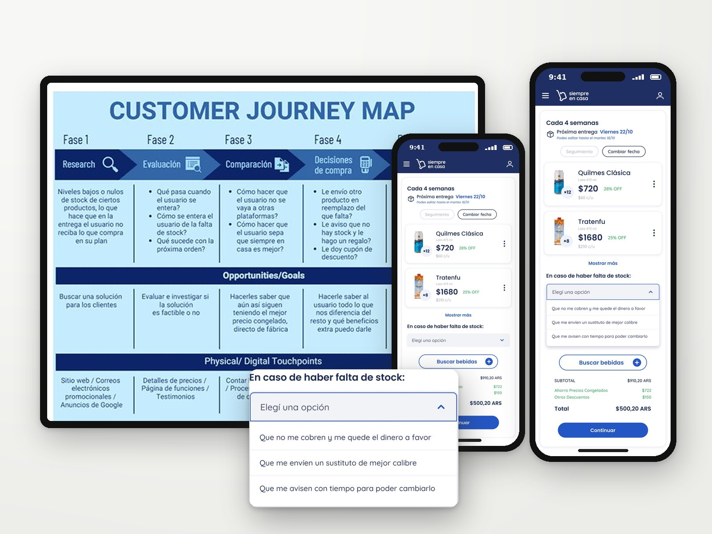
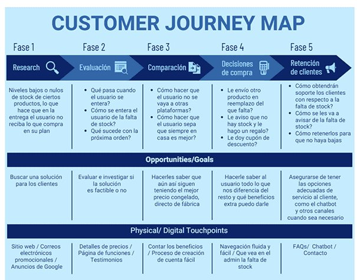
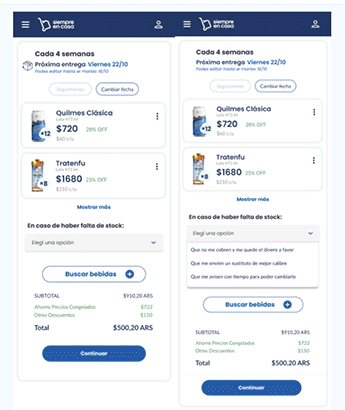

08UX research · Design ThinkingInvestigación UX · Design Thinking · 2024
Out of Stock ProblemsProblemas de falta de stock
A Design Thinking process to reduce the frustration of receiving wrong or incomplete orders in a subscription-based delivery service.
Un proceso de Design Thinking para reducir la frustración de recibir pedidos equivocados o incompletos en un servicio de entregas por suscripción.

How might we prevent users from feeling frustrated when they receive the wrong product or an incomplete order?
¿Cómo podríamos evitar que los usuarios se frustren al recibir un producto equivocado o un pedido incompleto?
Context
Contexto
Siempre en Casa is a beverage subscription service. Over three months (September to November), stock shortages grew sharply: products missing at the warehouse when the order was prepared, items out of stock days before shipping, and orders skipped or not invoiced. The result: lower average order value, involuntary subscription pauses and a drop in NPS.
Siempre en Casa es un servicio de bebidas por suscripción. En tres meses (septiembre a noviembre), los faltantes de stock crecieron fuerte: productos que no estaban en el depósito al armar el pedido, ítems sin stock días antes del envío, y pedidos salteados o sin facturar. El resultado: menor ticket promedio, pausas involuntarias de suscripción y caída del NPS.
Empathize: the data
Empatizar: los datos
I analyzed order data with SQL, NPS by week and 113 detractor comments: 55% order arrived incomplete, 15% guarantee stock, 10% want to restock on their own, 9% a replacement was sent, 8% charged for a product not delivered.
Analicé los pedidos con SQL, el NPS semanal y 113 comentarios de detractores: 55% pedido incompleto, 15% garantizar stock, 10% quiere reponer por su cuenta, 9% le mandaron un reemplazo, 8% le cobraron un producto no entregado.
“If it's not there, I can't buy it, and if I can't buy it, someone else will.”
“Si no está, no lo puedo comprar, y si no lo puedo comprar, otro lo va a hacer.”
What users expect
Qué esperan los usuarios
Insights
Insights
- Users rely on their complete order to stock up for the coming weeks.Los usuarios dependen del pedido completo para abastecerse las próximas semanas.
- They want accurate, up-to-date availability, including estimated restock dates.Quieren información de disponibilidad precisa y actualizada, con fechas estimadas de reposición.
- When a product isn't available, they expect comparable alternatives to choose from.Cuando un producto no está, esperan alternativas comparables para elegir.
- They expect clear, honest communication about the reason, the timing and what's being done.Esperan una comunicación clara y honesta sobre el motivo, los plazos y qué se está haciendo.

Ideation
Ideación
- Let users choose in advance what happens if a product is out of stock.Que el usuario elija de antemano qué pasa si un producto no tiene stock.
- Offer a larger size or equivalent product at the same price.Ofrecer un tamaño mayor o un producto equivalente al mismo precio.
- Notify users before the order is prepared, with time to adjust their plan.Avisar antes de armar el pedido, con tiempo para ajustar el plan.
- Show real-time availability and estimated restock dates on the site.Mostrar disponibilidad en tiempo real y fechas estimadas de reposición en el sitio.
- Credit or refund missing products automatically.Acreditar o reintegrar automáticamente los productos faltantes.

KPIs to measure
KPIs a medir
- Task success rate and time on task.Tasa de éxito y tiempo por tarea.
- Customer retention rate.Tasa de retención de clientes.
- Drop-off and conversion rates.Tasas de abandono y de conversión.